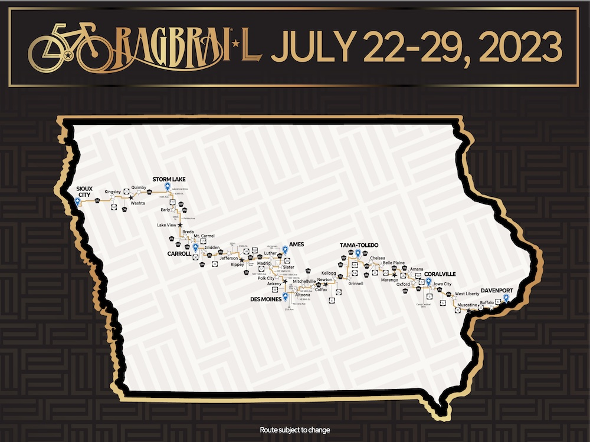
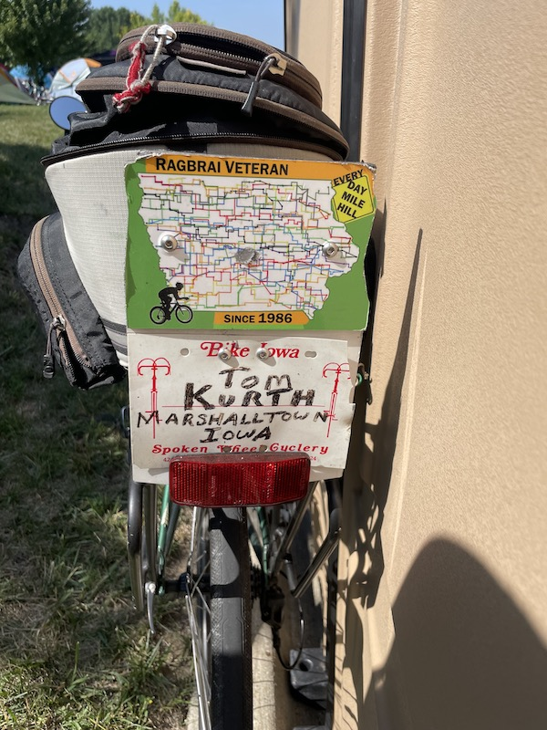

RAGBRAI L: Register's Annual Great Bike Ride Across Iowa (50th)
Last week, I rode a bicycle across the State of Iowa as part of RAGBRAI L.

And as I sit here decompressing from a whirlwind week, it seems fitting to write about it. After all, RAGBRAI started when two writers from the Des Moines Register (John Karras and Donald Kahl) decided in 1973 to ride their bicycles across the entire state and to write stores about what they found.
The problem is, I'm not even sure what I found.
But I'm completely obsessed with whatever it was.
What?
Every year, a group of >15,000 cyclists descend on an Iowan city on the bank of the Missouri River with the goal to ride all the way across the state to the Mississippi River. Why would someone do this? That is an excellent question, my friend. And I cannot answer that. Everyone has their own answer. For me: Curiosity. I wanted to know what the heck RAGBRAI was.
A unique feature of RAGBRAI is that it takes a different route through Iowa each year. This year's route commemorates the first ride by passing through many of the original overnight towns from 1973:
Sioux City, Storm Lake, Ames, Des Moines, and Davenport
And with 30,000 official riders this year and countless other unofficial "bandit" riders, you can have trouble visualizing the sheer chaos. Imagine a large parking lot full of bicycles. Now double that. Scratch that: quadruple it. Bike-a-palooza.

Remember that scene in Monty Python's The Meaning of Life where kids fill every nook-and-cranny and are crawling out of the cupboards in a small Yorkshire England Townhome. (link).
RAGBRAI is that, but with bicycles and the entire State of Iowa.

A Day in the Life
A day in the life of a typical RAGBRAI cyclist begins with waking up at 5 am, tearing down a tent in great haste, and jamming a bag onto a truck surrounded by other sleepy cyclists trying to do the same.
Then they proceed to ride 60-100 miles sometimes through hills and record-breaking heat waves to the next town where they must locate that bag among the multitudes, re-assemble their tent, and try to get some amount of sleep.
Wash. Rinse. Repeat. For 7 days.

Sounds like the vacation you've always dreamt about, right? Time to cancel that Caribbean Cruise and buy a bicycle right? Ready to train by riding 50 milers every weekend of May and June?
Why?
So then why? In 1908, Henry Ford mastered large-scale production of cars with the Ford Model T. And 115 years later we celebrate NOT using an automobile to cross Iowa.
Again, I don't know.
But, there's something oddly magical about this lifestyle. Over the course of one day, you ride from one small Iowa town to another small Iowa town surrounded by a herd of fellow cyclists. You're all kind of doing the same thing. But you're also not. "Everyone does RAGBRAI differently" they say. And you can't help notice those differences and love them. In a world of polarized Us vs Them, this is deeply refreshing.
Food
Riding all those miles burns around 3,000 extra calories each day, for 7 days (21,000 calories in a week). So the eating is just important as the riding.
Each town is swarming in fellow cyclists that are trying to consume every scrap of food available:
- Breakfast sandwiches
- Cinnamon Rolls
- Doughnuts
- Pie
- Pork Chops
- Ribeye Sandwiches
- Ice Cream
- Cookies
- Pasta dinners
- Specialty Grilled Cheese Sandwiches
- Smoothies
- Corn-on-the-Cob smothered in Butter
- etc etc etc
And all the food is incredible. Iowans know how to eat.
A fellow cyclist said: "RAGBRAI is a plague of locusts that descends on small towns and eats everything in sight"
But even that doesn't capture it fully.
Alcohol
You can't ride 5 miles without finding alcohol. And, this is a fun little mini-game for some people. Cyclists glue empty beer cans, fireball bottles, etc to their helmets. Folks ride by with jerseys that read "This Guy Needs a Beer". And don't forget about Team Waldo whose very origin story involves a rubber-chicken and a six-pack of beer.
Iowa Craft Beer Tent and Backpocket Brewing have multiple stops each day and those who make 10 of the stops over the week get a special shirt. All week, cyclists proudly wear their beer shirts from previous rides.
Spectators offer beer to riders in 100 degree heat as if it contains electrolytes and isn't at all a diuretic.
Each morning, road signs advertise Hangover Cures. How one can get drunk AND ride 500 miles across Iowa is beyond this Teetotaler.
But they do.. oh they do.
Music
Every night RAGBRAI hosts a major concert and this year included some household names: Spin Doctors, Bush, and Lynyrd Skynyrd. Yes, that famously resurrected group known for Sweet Home Alabama, Simple Man, and Freebird played a show for cyclists that ride across Iowa.
You can't make this up.
But even during the day, it's hard to ride 10 miles without a fellow cyclist blasting the hits. Some even tow trailers across the state with speakers so large they might cause tinnitus if you ride too close.
On approaching Carroll during Day 2, there was a series of road signs that welcomed riders and said "Sing song of joy". I turned towards a fellow rider and asked if he knew any joyful songs. And he proceeded to sing an entire song to me over the next 3 minutes. I was smitten.
And at the finish line in Davenport, an Irish Cyclist sang the crowd a folk song in Gaelic for no reason in particular. Just because...
Local Iowans
Local Iowans are some of the kindest people on God's Green Earth. Supporting 30,000+ cyclists riding through a town of 250 is no small ask. But they do it with a smile on their face. Most towns go all out. Their local bands play in the town square. They decorate their town in RAGBRAI regalia. They wave and welcome the non-stop parade.
They let cyclists relax in the shade surrounding their homes. They bake cookies and sell them on the corner of gravel roads. They invite riders to stay in guest bedrooms or camp on their lawns. They volunteer to serve food at local churches.
They set up Slip-N-Slides on their lawns for free even though it will surely ruin the grass. They set up sprinklers to cool off overheated riders. Sometimes they will even offer free water, free beer, free hotdogs, and free pulled-pork sandwiches.
The locals are only too eager to chat with a random rider, hear about where they're from, and what brings them to Iowa.
Some even setup straw-bale urinals that implore you to "Free The Turtle" and "Feed Our Weed"
Fellow Cyclists
An event like RAGBRAI brings out some of the most fascinating people. It's hard to be bored. There's always something amusing to look at or someone fascinating to talk to.
Over the week, I talked to:
- A guy who has ridden every day, every mile, every hill since 1986 (RAGBRAI XIV)
- A guy who has ridden in 49 RAGBRAIs: First ride in the 2nd Annual RAGBRAI at 16 years old and did a self-supported RAGBRAI during COVID
- A retired Air Force Colonel who used to fly B52 Bombers
- A sports coach who spends each summer riding a bicycle across the entire USA, and is training to climb Mt Kilimanjaro after RAGBRAI.
- A serial entrepreneur who started building businesses in China when it opened up in the 80s
- A former Chicago Mercantile Exchange pit trader who spent months cycling the country of Vietnam.
- A couple that elected to inline skate RAGBRAI rather than ride a bike
- A woman that started cycling seriously only 8 months ago after learning about RAGBRAI
- ... and many many more ...

Weird and Crazy
On Day 5, I took a detour off-route to explore the small town of Montour. A married couple sitting on a house porch shouted out to me "y'all are crazy", to which I replied "yup, we are". Later that night I considered that maybe RAGBRAI is "Summer Camp for Weird and Crazy People".
Normal people don't decide to take a vacation in order to ride a bike across Iowa. They book an actual vacation to a fun place like Cancún.
The weird people definitely show up, and we love them for it:
- A man riding a Penny-Farthing big-wheel decked out in Red-White-and-Blue Stars and Stripes and a cape!
- Three different unicyclists
- A guy riding a BMX bike backwards the entire distance (looking over his shoulder)
- A double-decker bike
- Ultra-runners running from Coralville to Des Moines
- A woman wearing a fake rubber butt and welcoming people to grab it
- A team wearing only Speedos
- A couple riding a tandem recumbent bike powered by a flux capacitor using 1.21 Jigawatts
- ... and so much more ...
So what is RAGBRAI then?
After Day 3, I found myself exhausted, lethargic, and overwhelmed. I wasn't sure I could go on. In my delirium, I turned to a veteran rider who has ridden it 20 times and asked "What the heck are we doing out here?" And after all those years, she couldn't even give a succinct answer.
Are we biking Iowa? Are we challenging our physical limits? Are we trying to eat all the pork/pie/corn in Iowa? Are we a roaming circus of crazy people? Is it an excuse just to drink beer? Or is it all about the concerts? Is it about camping out in tents? Are we trying to meet lots of small town locals?
All of those things, she answers.
And still, it doesn't seem to capture what RAGBRAI is about. Perhaps, it's not possible to distill. After all, this article barely even begins to capture my experiences. As a friend reminds me "RAGBRAI is a couple months of experience compressed into a single week".
And they keep coming back
About 3 years ago a friend first told me about this crazy event. He has done 7 RAGBRAI rides since he was a teenager. This was a common theme. Riders keep coming back to do it again and again.
Why would someone need to ride across Iowa even once? And especially after one time, why would you need to do it again and again and again? Why not go ride one of the other great states in our union? Or go cycle another country? Why Iowa again and again?
So, as we winded through corn-fields, over rolling hills, whizzing by the beautiful landscape, I asked this question of each new rider I met: "How many RAGBRAIs have you done?"
About ~50% of the time, the answer was the 1st time. For the other ~50% was >5 times. Only 4 riders all week said that it was their 2nd ride. Fascinating.
You either do it once and never again, or you come back to this "weird people summer camp" again and again and again.
And, I don't think it's hard to see which one I am.
Can't wait to see you again, Iowa! ❤️
(Even a 90 mile day with 4,200 ft of climbing in >90 deg F heat can't stop this smile!)